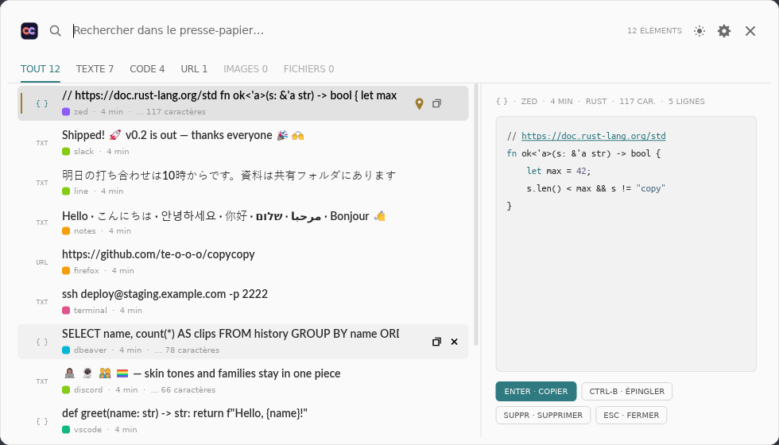
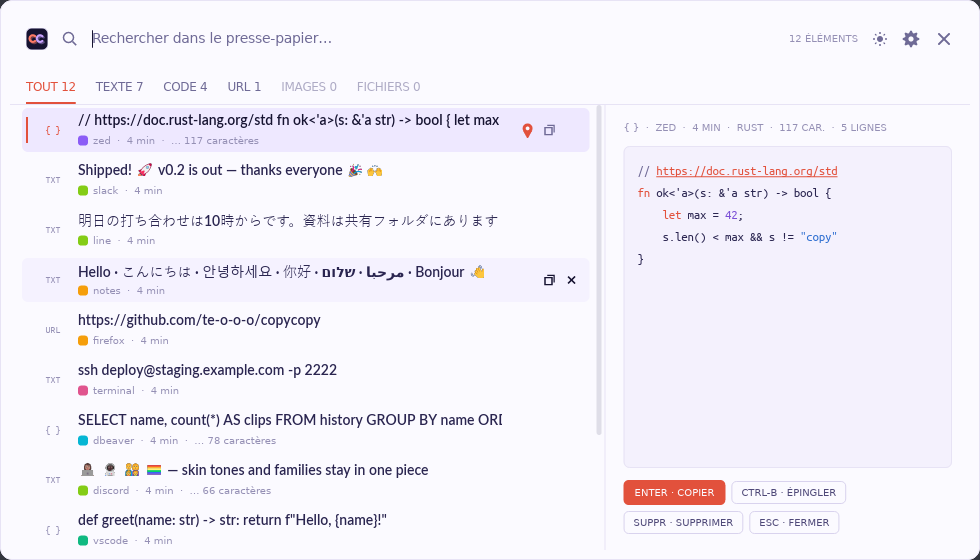
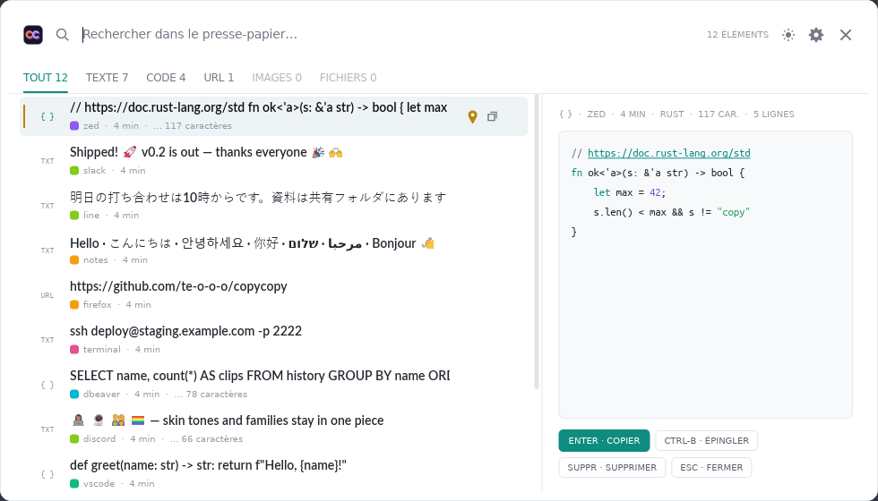

A clipboard manager that remembers everything you copy, except your passwords.
Version 0.6.0, free and open source, for Windows, macOS and Linux; the zip and .deb are on the releases page.
On Windows, choose More info, then Run anyway. On macOS and Linux, run this once:
# macOS xattr -dr com.apple.quarantine /Applications/copycopy.app # Linux chmod +x copycopy-linux-x86_64.AppImage
One shortcut opens it over whatever you are doing. Type a few letters, press Enter, and the entry is back in your clipboard.
Text, code, links, images and files, with the app each one came from.
Search the whole history, not just what fits on screen, and filter by type.
The language is recognised from the snippet and from the app you copied it in.
Paste them into a folder, a chat or a mail, or drag them out of the list.
Whatever a password manager marks as confidential is dropped before it is written.
No account, no cloud, no telemetry. Portable mode keeps it all in one folder.
Keep what you reuse at hand. The entry can land right where your cursor was.
A hundred thousand entries, still 59 frames per second.
The keyboard does it all; the mouse works too.
Each pair has a light and a dark side, following your system. This page shows the side your system is on.


